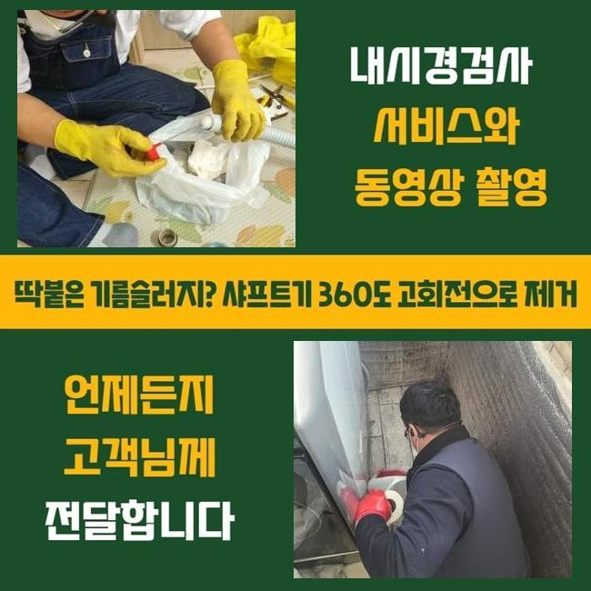
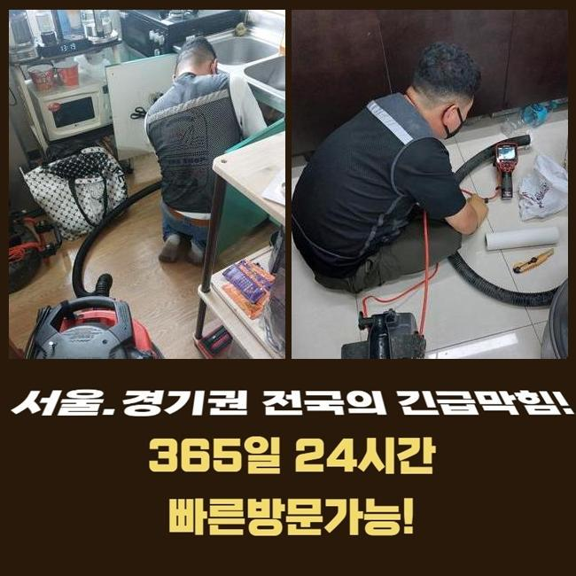
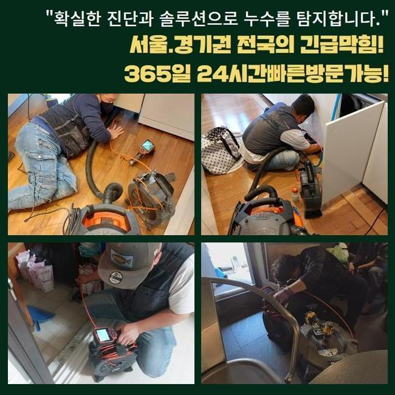
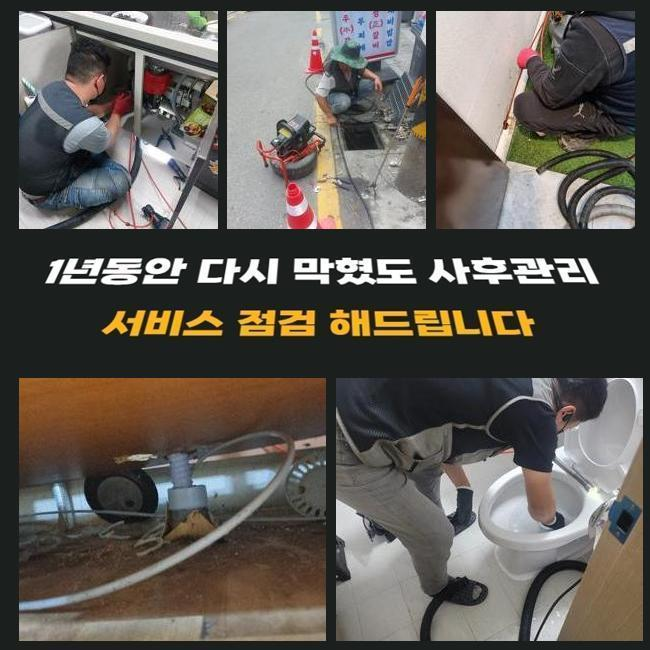
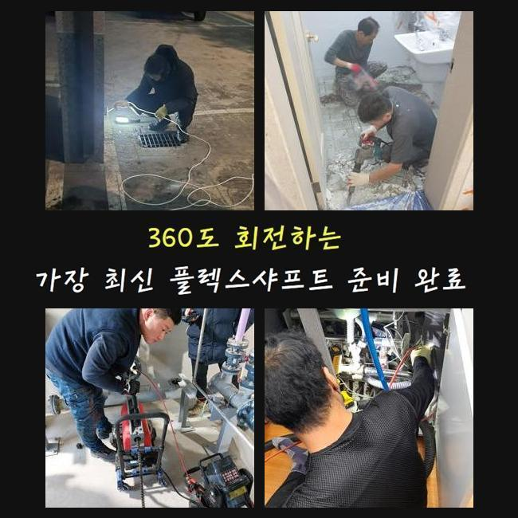
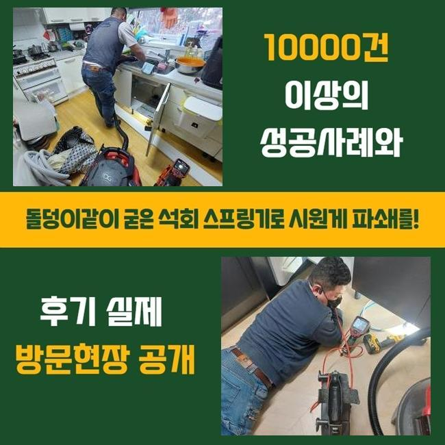
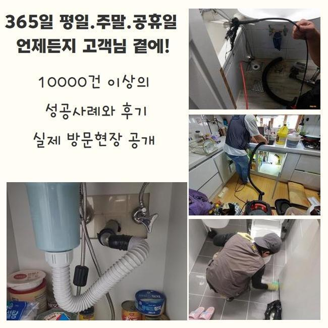

🏠 양주 마전동세탁기배수구막힘 회암동 맨홀막힘 설비출장
양주 마전동 배관막힘 전문 시공 후기

📋 작업 개요
- 위치: 양주 마전동, 마전동, 양주
- 서비스 유형: 배관막힘, 맨홀막힘, 누수수리, 역류해결, 뚫는업체, 고압세척, 설비공사
- 작업 일시: 2025. 6. 10. 23:14
- 업체명: 하수구수사대 (010-5615-2118)
🔍 문제 상황
저희측은 하수관에 발발한 여러종류의 트러블을 처리하는 곳입니다
어느 곳이든 고장을 세밀하게 검사하고 적절한 대책을 적용하여 해결한다는걸 설명드립니다
어제는 세면기에서 오취가 퍼졌고 관로의 정체문제까지 발현된 장소에 방문하게 되었는데요
방문장소는 통상적인 아파트였고 1층에 위치하여 더욱 문제가 증대된 상태였습니다
양주 마전동세탁기배수구막힘 회암동 맨홀막힘 설비출장
배관정체는 일찍 찾아서 정리못한다면 급속도로 정황이 안좋아지게 됩니다
예를들어 머리카락은 지속적으로 몸집을 키워나가면서 배수를 어렵게 만드는데요
집안 구성원들이 욕실을 제대로 사용못하는 상태라서 정말 어려움을 겪고 있으셨죠
저희들은 세면기를 이용하던중 단단한 이물이 관로로 빠져들어 문제를 촉발시켰다고 예측하였죠
손님께 사태를 대략적으로 확인해보았고 이에 적절한 기구들을 챙긴뒤 출동했습니다
제일 처음 활용한건 배관내시경입니다
배관전용 카메라로 관로속까지 들여다볼수 있어서 정말 긴요한 도구이죠
그리고 안이 어둡다면 플래시를 이용하여 이물질을 빈틈없이 확인할수 있게끔 해줍니다
그렇기에 대체적인 관로고장은 내시경장비로 진단할수 있죠

🔎 원인 분석
💡 전문가 진단: 정밀 진단 장비를 사용하여 슬러지의 고착 여부를 판명하고 타격/세척 작업을 실시했습니다.
만약에 이걸 활용안하고 어설프게 공정을 해나간다면 공사시간이 증가하거나 명확한 세정이 힘들어질수 있답니다
관로 속은 다양한 퇴적물로 오손된 모습이었고 하수관에도 부담을 주는 상황이었어요
또 잔존물이 누증되면서 점차적으로 역한 내가 강화되었습니다
이는 아침저녁으로 괴로움을 주었다 볼수 있었죠
바닥면 또한 고장이 일어나며 오손된 모습이었죠
아침에 손을 닦다가 하수가 역류한 사태도 많았다고 이야기하셨어요
그런 상황이 발발하였을시 마른걸레로 이물을 처리하느라 난감했다고 말하시더라고요
저희측에서는 근본적인 이유를 발견해 고장을 체계적으로 정리하기로 하였죠
관로속에 가득한 오수는 석션기로 처리하고 내시경장비로 확인해 보았을 때엔 굳어버린 석회질과 각종 노폐물이 뒤섞여 있었죠
흙성분도 곳곳에 잔존하는걸 간파할수 있었죠
가운데의 파이프를 분해해서 소제를 시행하였어요
고인물이 처리되니 배수관 내부가 훨씬 선명하게 목견되었어요
그러고 나니 손상된 하수관의 상태도 파악되었는데요
그것을 그냥 방치한다면 노폐물이 재차 달라붙을수 있기에 교체할필요가 있다고 이야기해 드렸답니다

🔧 작업 과정
게다가 더운 날씨엔 곰팡이가 증식되 모습도 목견될수가 있습니다
손님께서는 더운날씨에 유독 오취가 올라올때가 많았던걸로 기억하셨죠
해당 사태가 손상된 부속에서 유발되었을 가능성이 높다는걸 말해드렸죠
피트랩은 굴곡되어 있기 때문에 노폐물이 쉽게 끼는 현상을 보여줍니다
그러하기에 트랩부분이 막힘이 일어나지 않도록 정기적인 클리닝이 필요하죠
부분적인 교체업무가 완료되었고 바로 역류와 막힘현상을 야기했던 배관도 수리할 준비를 할 차례인데요
노후화된 관로 교환후에 바닥면의 배관도 확실하게 진단하고 클리닝 해야만 하수가 잘 빠져나갈수 있어요
찌꺼기들을 석션기로 처리하고 내시경기기로 진단해 보았죠
딱딱해진 석회성분과 이물들이 배관을 메운 상태였기에 순탄하게 세척이 안되는 모습이었습니다
그래서 저희 배관팀은 플렉스샤프트를 가동하여 정비하기로 합니다
체인이 파이프로 삽관되어 고착화된 슬러지들을 소제해주기에 배관작업엔 반드시 있어야할 기기입니다
세면기의 배수관에서 구부러진 구간도 무난하게 들어갈수 있어 한층 활용도가 높다고 말씀드릴수 있겠습니다
바위처럼 방대해진 퇴적물을 분쇄해주면 석션장비로 흡입하여 막힘을 재빠르게 종결시킬수 있어요
좁은 부속에서 강한 압력을 가하는 공정이기에 테크닉이 중요하단걸 설명드립니다
잔재들을 지속해서 파쇄하고 흡입하는 공정을 이어나갔습니다
해당되는 시공을 부적절하게 이행한다면 배수관에 파손을 야기하기도 합니다
이따금 분쇄기기를 가져와 자발적으로 정리해보려 생각하시는 분도 있죠
정밀한 진단없이 스케일러를 사용하다가 관벽의 손상으로 전이될 때도 많아요
그렇기에 배수관의 막힘이 시작되었다면 해당기술을 가진 기공을 통하여 정비하는게 합당하다고 안내드립니다
지속된 막힘으로 누수문제까지 겹친다면 주변세대에까지 문제가 전이될수 있으므로 가급적 신속히 수리를 받아보는게 좋답니다
저희측은 분리된 이물들을 외부로 토출시켜 개별적으로 처리하였습니다
고객분에게서는 생각보다 엄청난 부피에 놀라셨다고 해요


✅ 작업 완료
저희측에서는 가급적 배수관으로 물티슈 등이 들어갈수 없도록 하시는게 좋다는 점도 말해드렸죠
이물질이 누증되었을때 뚫어뻥을 사용하면 잠정적으로는 개선되는 것으로 보이겠지만 얼마안가 재발할 가능성이 높다고 말씀해드렸죠
소제된 배수관 내측을 고객분과 배관카메라를 통하여 진단해 보았습니다
이후 세면기에 물빠짐은 원활한지 시험하는 공정을 시행하였습니다
고객님의 거처에 체증문제가 발발하였다면 저희를 찾아주십시오
세밀하게 관측하고 깔끔하게 처치하도록 하겠습니다




⚠️ 베란다 누수 및 방수 관리 방법
- ✅ 비가 많이 올 때 창틀 주변이나 아래층 천장에 얼룩이 생기는지 정기적으로 확인해 보세요.
- ✅ 우수관 주변 실리콘 마감이 들뜨거나 깨진 틈새가 있는지 손상 여부를 수시로 체크하세요.
- ✅ 베란다 바닥 타일의 줄눈(메지)이 소실되면 그 틈으로 물이 침투하여 누수가 유발됩니다.
- ✅ 누수 의심 증상 발견 시 방치하면 아래층 손실이 커지므로 즉시 전문가의 진단을 받으십시오.
💡 핵심 정리
- 확실한 장비 작업(내시경 점검 및 샤프트 스케일링)으로 원인을 뿌리 뽑습니다.
- 작업 후 1년 이내에 동일한 부위 재발 시 100% 무상 A/S 서비스를 보장합니다.
- 서울 · 경기 · 인천 전 지역에 24시간 언제든 긴급 출동할 수 있도록 항시 대기 중입니다.
❓ 자주 묻는 질문 (FAQ)
🚨 양주 마전동 배관막힘 문제로 고민이신가요?
정확한 원인 진단과 확실한 시공으로 재발 없는 해결을 약속드립니다.
24시간 긴급 출동 | 서울 · 경기 · 인천 전지역 | 1년 내 재발 시 무상 A/S